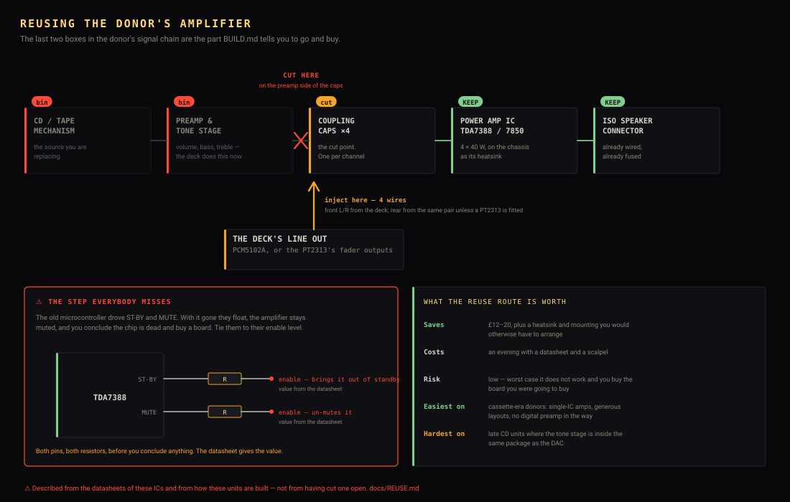
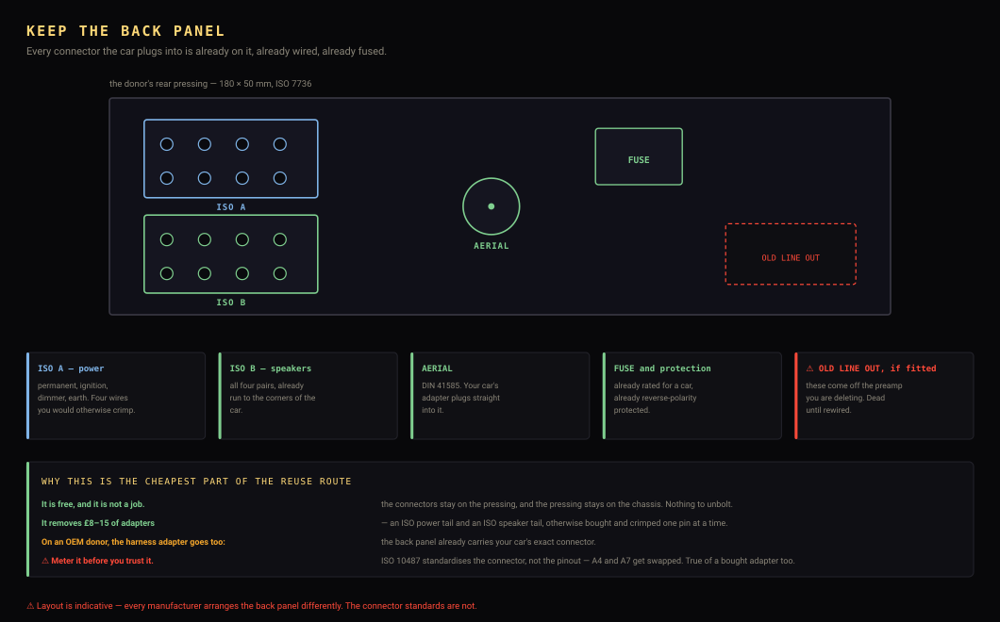

Keep what you can. The donor already contains the amplifier the shopping list is about to tell you to buy.
The strip-down above is the default, and it is the right default. But it bins a part the shopping list then tells you to go and buy. Every CD-era head unit contains a 4-channel amplifier — a TDA7388, a TDA7850 or something from the same family — already bolted to the chassis as its heatsink, already wired to the ISO speaker connector, already fused. That is exactly the board BUILD.md costs at £12–20.

ST-BY and MUTE, and with it gone
they float, so the amplifier stays muted and you conclude the chip is dead.
The display is the one everybody asks about and usually the answer is no: most head-unit panels are segment or character devices with no pixels to address, and a genuine dot-matrix one is usually 128×32 behind an undocumented controller. ✅ The exception is a Futaba GP1294AI — the firmware already drives it, and those panels are commonly sold as car-radio pulls. Check the part number on the glass before assuming either way.